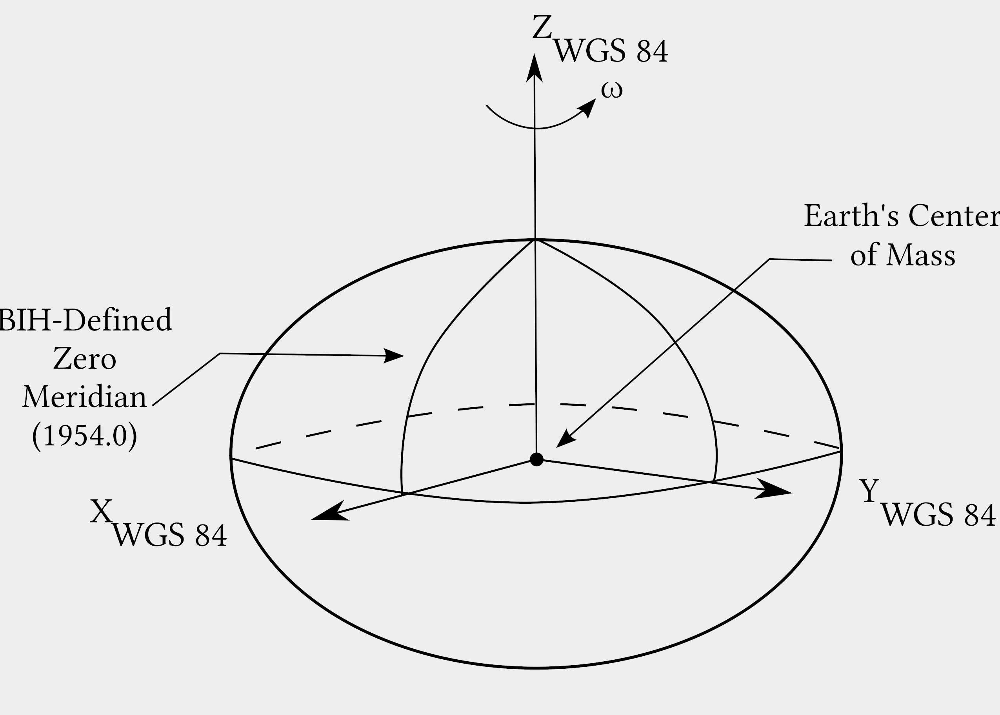
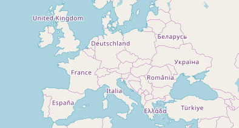
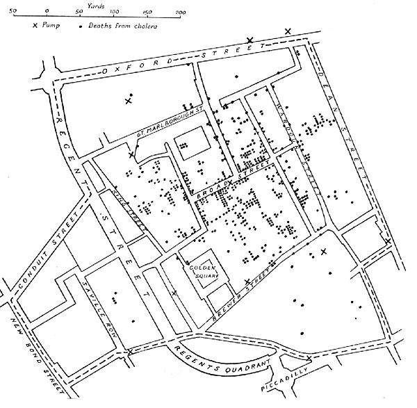

Remi Forax
“Geomatics is the "discipline concerned with the collection, distribution, storage, analysis, processing, presentation of geographic data or geographic information"”
source: Wikipedia.org - Geomatics
“La géomatique est la discipline qui s'occupe de la collecte, la distribution, le stockage, l'analyse, le traitement et la présentation des données géographiques ou de l'information géographique”
source : Wikipedia.org - Géomatique
Archéologie, Agriculture, Aménagement du territoire, Commerce, Démographie, Environnement, Épidémiologie, Foresterie, Géologie, Hydrographie…
Géodésie, GPS navigation, Photogrammétrie…
La terre n'est pas vraiment ronde, pas plate du tout, donc trouver un système de coordonnées pour indiquer où l'on se situe sur la terre n'est pas facile.
Ce n'est pas une patate non plus, mais c'est pour comprendre le problème !
Le code EPSG identifie de façon unique un SRS.
Le site https://epsg.io/ permet d'obtenir les informations
correspondant à un code EPSG.
European Petroleum Survey Group (EPSG) a été créé sous l'impulsion de ELF (ex Total) en 1985
En 1884, la conférence internationale sur le méridien a lieu aux États-Unis et les représentants de 25 nations decident que la longitude 0 passe par le Royal Observatoire de Greenwich.
La france a voté contre, la longitude 0 doit passer par Paris :)
La latitude est l'angle entre le centre de la terre et le cercle d'un parallèle,
L'équateur est à 0 degré, les pôles à 90 degrés.
La longitude est l'angle entre le centre de la terre et un méridien,
Le méridien de Greenwich est à 0 degré.
La latitude et la longitude peuvent s'exprimer avec deux unités différentes
Il existe des convertisseurs sur le Web
On utilise la surface d'une sphère aplatit pour indiquer la position sur la terre.
Le World Geodetic System (WGS) 84
(EPSG 4326)
est le standard utilisé en cartographie 2D.
Le système de navigation GPS, fabriqué par les États-Unis, utilise le WGS 84.
Les autres systèmes de navigation
(GLONASS, BeiDou, Galileo) utilise aussi WGS 84.
Une carte est une surface 2D, donc il faut projeter la surface de la sphère sur un plan.
Le WGS 84 possède plusieurs projections.
Il n'existe pas de bonne projection, cela dépend de ce que l'on veut conserver,
les angles (Lambert conique, Mercator), les surfaces (Albers conique), etc
Dérivé de la projection conique de Johann Heinrich Lamber (EPSG 2154)
C'est la projection utilisée pour la France Métropolitaine depuis 2000
EPSG 3857, initialement utilisé par Google Maps et maintenant utilisé par tous les fournisseurs de carte en ligne CARTO, Mapbox, Bing Maps, OpenStreetMap, MapQuest, Esri

Attention, ce n'est pas la projection cylindrique de Mercator,
la projection Web Mercator ne conserve pas les angles, elle est juste jolie
“A geographic information system (GIS) consists of integrated computer hardware and software that store, manage, analyze, edit, output, and visualize geographic data.”
source: Wikipedia.org - GIS
“Un système d'information géographique (SIG) se compose de matériel et de logiciels informatiques intégrés permettant de stocker, gérer, analyser, éditer, produire et visualiser des données géographiques.”
source : Wikipedia.org - SIG
Les premiers GIS sont des cartes d'épidémiologie pour suivre le cholera à Paris (1832) et à Londres (1858) en positionnant des données chiffrées (nombre de morts) sur une carte.
Carte des morts dans le quartier Soho de Londres (1958)
Esri
est créé à la fin des année 70,
Mapping Display and Analysis System, renommé en 90 en
MapInfo,
créé le premier système sous DOS (1986)
ESRI créé
ArcGIS
fin 1999,
QGIS
(opensource) est créé en 2002.
Il existe plusieurs libraries OpenSource
Seul OpenLayers gère d'autres projections que Web mercator.
Il existe aussi des solutions payantes par Google ou Esri
{kind=link}
{kind=link}
{kind=link}
{kind=link}
{kind=link}